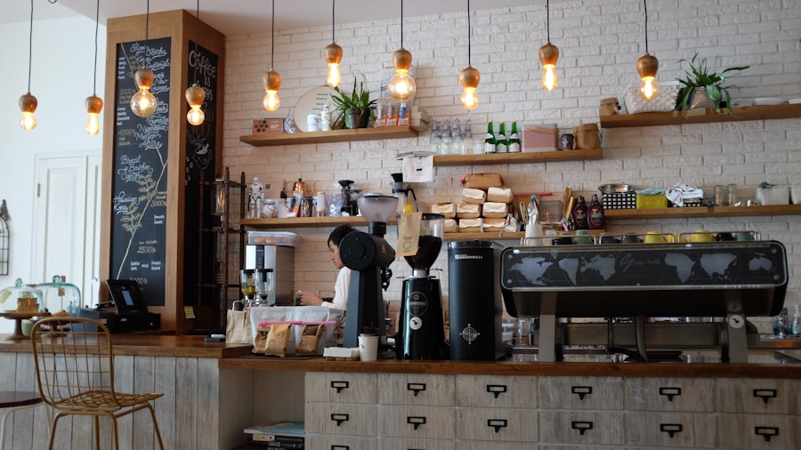
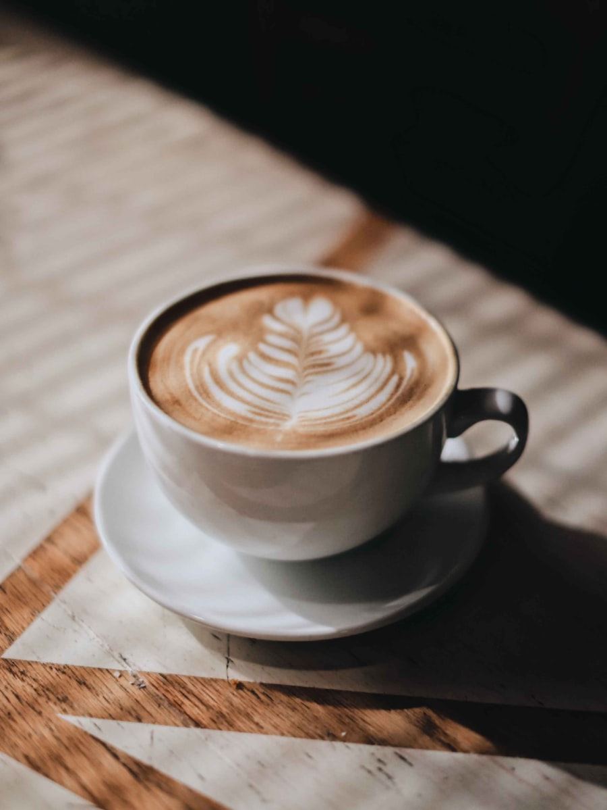
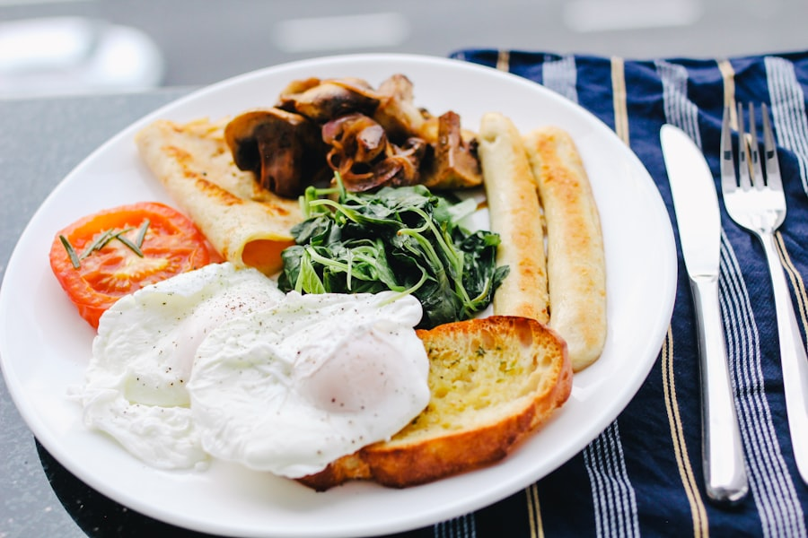
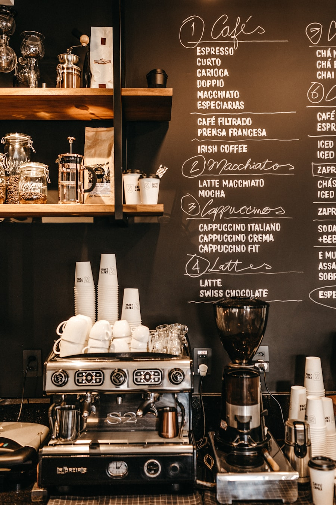

Skąd pomysł na kawiarnię?
Z prostej obserwacji: w okolicy było gdzie napić się kawy w biegu, ale nie było gdzie usiąść na godzinę. Chcieliśmy miejsce, do którego wraca się dla atmosfery, a nie tylko dla kubka na wynos.
Załoga NOTY
Kawiarnia NOTA · projekt koncepcyjny
Kawa z małej palarni, matcha ubijana na miejscu i śniadania, które nie kończą się o jedenastej.
NOTA
Kawiarnia
Miejsce, w którym zostaje się dłużej.
Dobra kawa, kuchnia bez pośpiechu i sala, w której nikt nie pogania przy stoliku.
Krótka rozmowa

Z prostej obserwacji: w okolicy było gdzie napić się kawy w biegu, ale nie było gdzie usiąść na godzinę. Chcieliśmy miejsce, do którego wraca się dla atmosfery, a nie tylko dla kubka na wynos.
Załoga NOTY

Ziarno bierzemy z małej palarni i parzymy je z ekspresu albo przelewowo. Matchę ubijamy na miejscu. Ciasta i śniadania robimy sami, także w wersji bezglutenowej.
Załoga NOTY

Kto powiedział, że śniadanie je się tylko rano? Przychodzą do nas rodziny z dziećmi, ludzie z psami i tacy, którzy siadają z laptopem na dwie godziny. Wszyscy się mieszczą.
Załoga NOTY

Nasza kawa
Ziarno mielimy do każdej filiżanki osobno. Reszta to już tylko cierpliwość.
Każda kawa wychodzi stąd zrobiona ręcznie — od zmielenia ziarna po rozetę na mleku.
Raz w miesiącu zostajemy dłużej. Winyle, kawa na zimno i ciasto, które zostało z dnia. Bez biletów, bez rezerwacji — po prostu wpadnij.
„Siadam tu z laptopem na dwie godziny i nikt mnie nie pogania.”
Marta · gość
„Najlepsze śniadanie w okolicy. Wracamy co sobotę.”
Paweł · gość
„Matcha bez sztucznego posmaku — rzadkość. I ciasto prosto z pieca.”
Ola · gość
„Przyszliśmy z psem, dostał miskę wody bez pytania. Drobiazg, a robi różnicę.”
Kuba · gość
„Kawa jak z dobrej palarni, a obsługa pamięta, co się zamawiało ostatnio.”
Zofia · gość
„Najlepsze śniadanie w okolicy.”
Paweł · gość
„Matcha bez sztucznego posmaku.”
Ola · gość
Za każdą oceną stoi kawa, śniadanie albo kawałek ciasta. To wszystko, na czym nam zależy.
Wpadnij do nasOdwiedź nas
ul. Przykładowa 1, 00-000 Miasto — w centrum, przy deptaku. Ogródek od frontu, parking w okolicy.
| Poniedziałek | 9:00 – 18:00 |
|---|---|
| Wtorek | 9:00 – 18:00 |
| Środa | 9:00 – 18:00 |
| Czwartek | 9:00 – 18:00 |
| Piątek | 9:00 – 18:00 |
| Sobota | 9:00 – 18:00 |
| Niedziela | 10:00 – 18:00 |
Jesteśmy przy ul. Przykładowej 1, w centrum, tuż przy deptaku. Ogródek od frontu, parking w okolicy.
Wyznacz trasęCodziennie wrzucamy tam, co wyszło z kuchni: